曼联时期
从天赋边锋成长为全面终结者，完成速度、盘带、对抗和门前嗅觉的第一次全面升级。
Iconic Frames
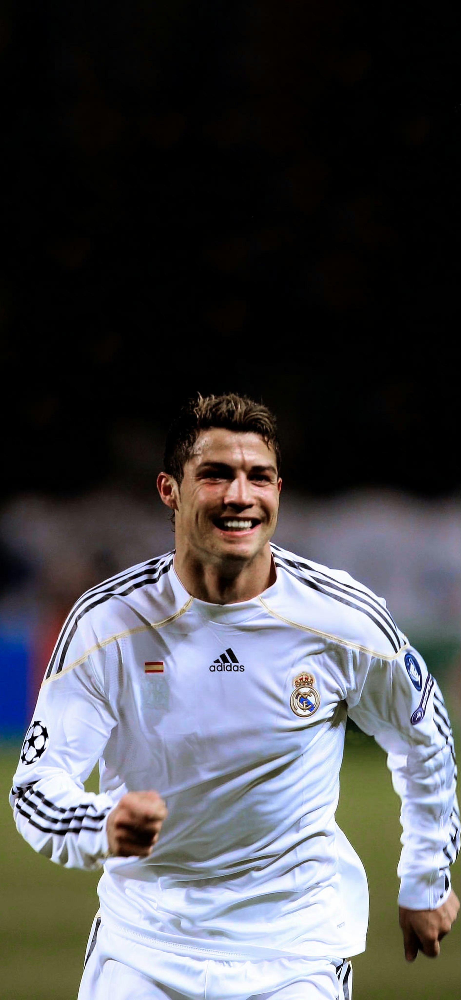
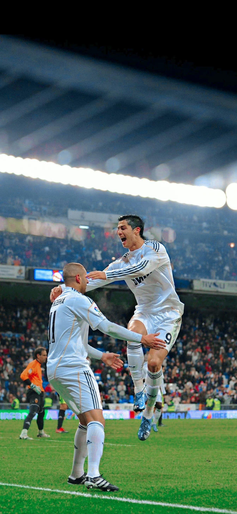
Photo Wall
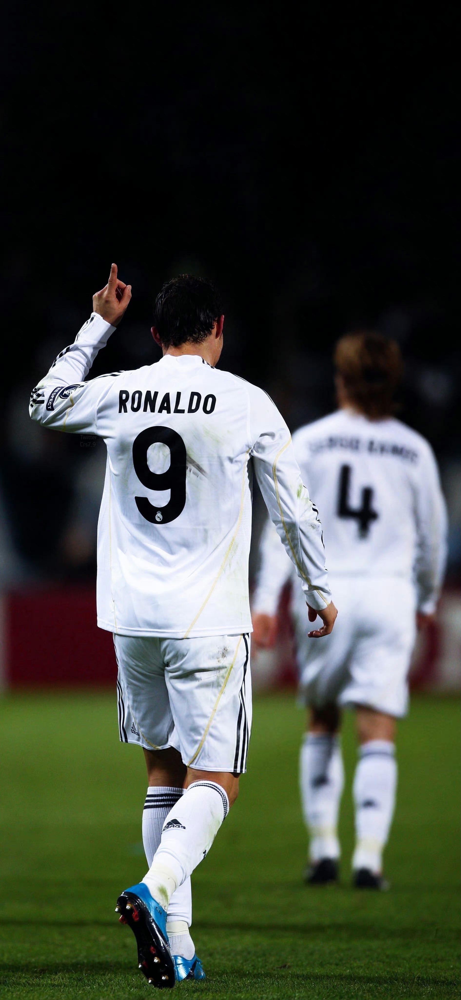
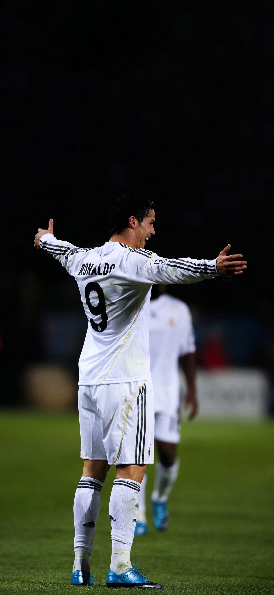
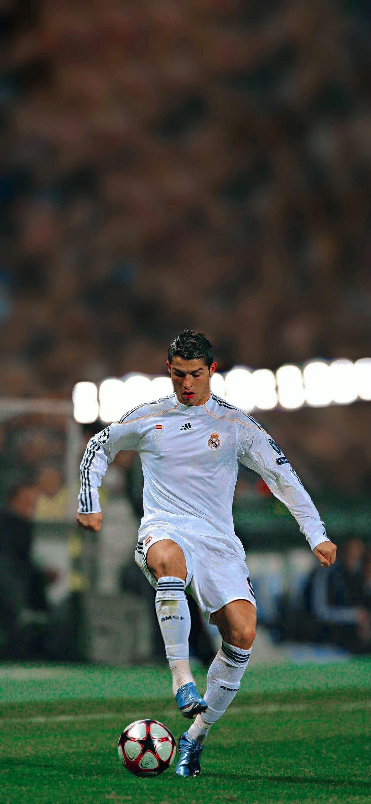
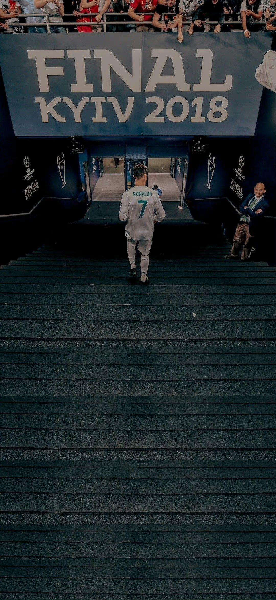
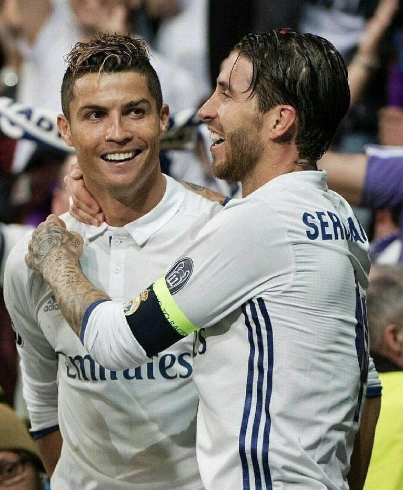
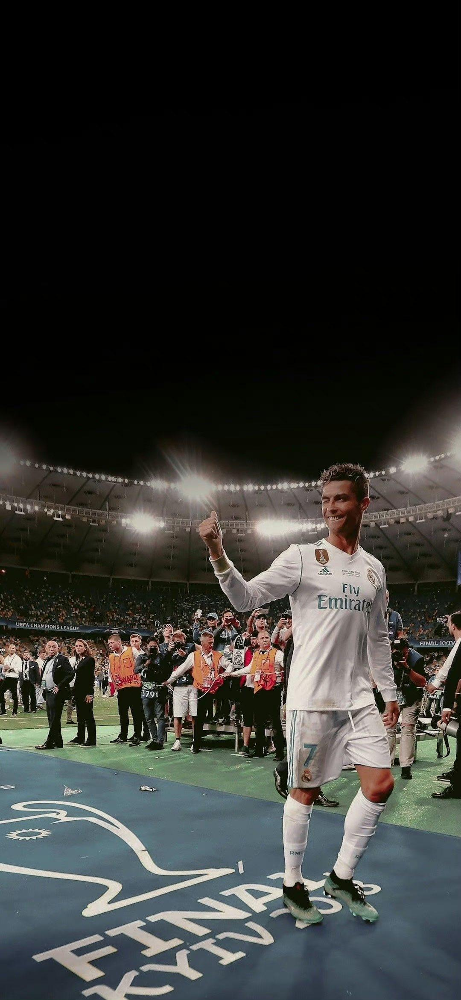
From Madeira to the World
从天赋边锋成长为全面终结者，完成速度、盘带、对抗和门前嗅觉的第一次全面升级。
以极高效率刷新纪录，在欧冠大场面里建立了近乎符号化的统治力。
进入新的联赛环境，依然用身体管理、求胜欲和终结能力维持顶级输出。
年龄增长没有让他减速，反而把自律、训练和职业性打磨成一种长期统治的模板。
Career Chapters
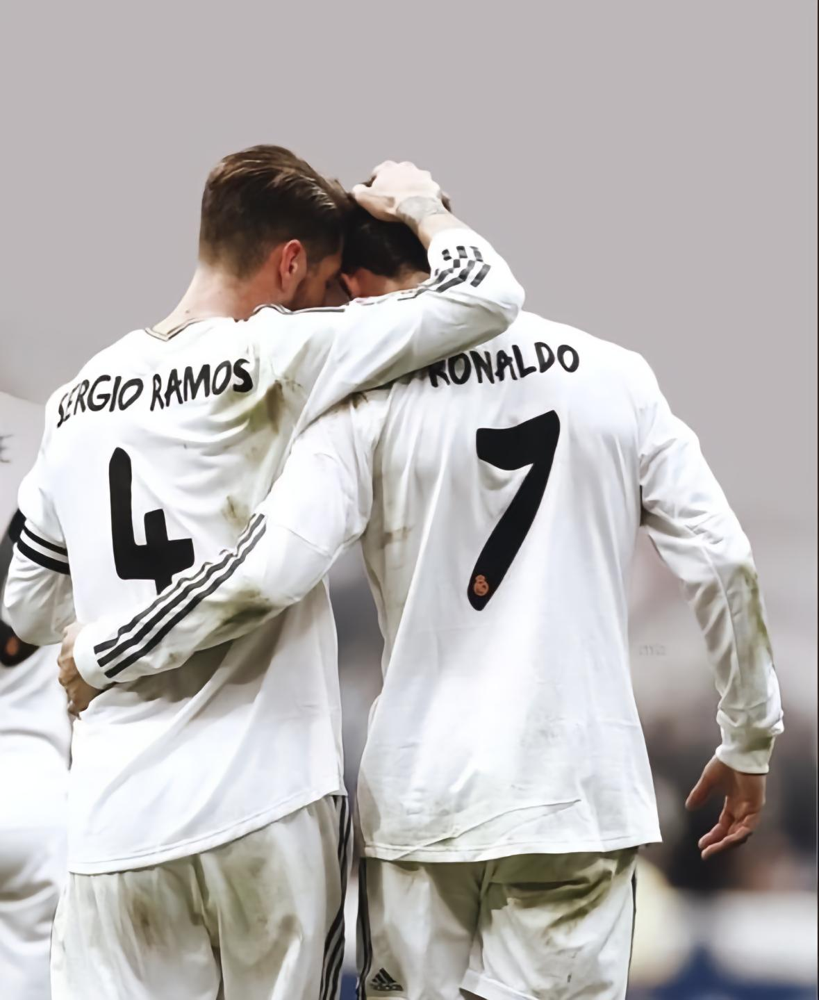
从马德拉岛走出来的少年，把爆发力、节奏变化和球场自信先变成了辨识度。
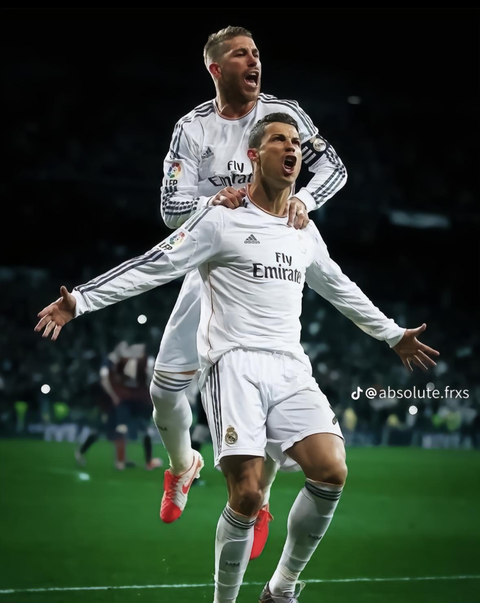
在英超的高速对抗里，他从观赏型边锋成长为能决定冠军走向的核心终结者。
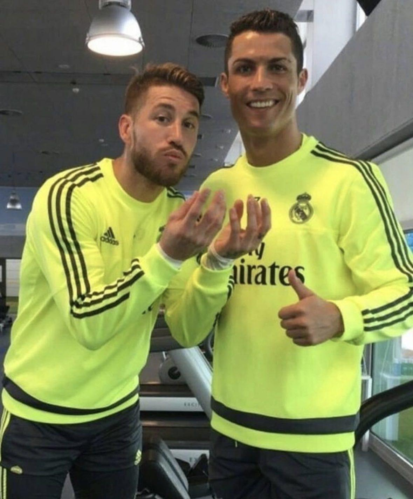
皇马时期是最锋利的阶段，进球效率、欧冠强度、关键战输出全部拉到历史级。
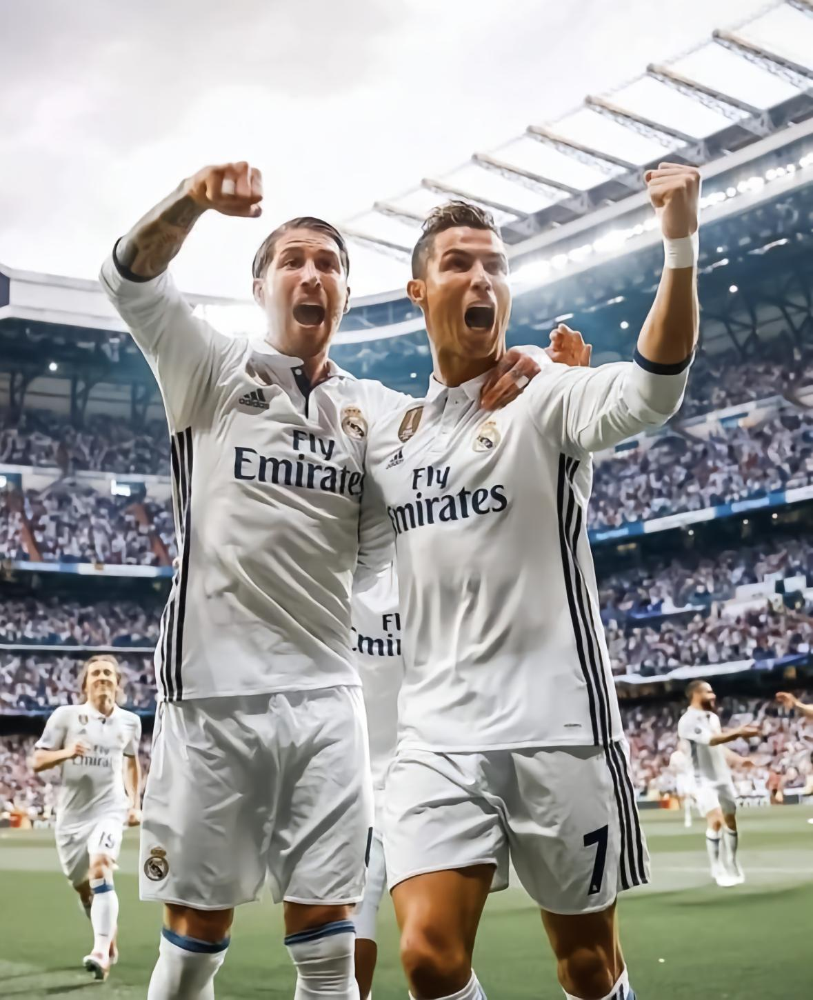
从个人巨星到国家队旗帜，他把领导力、韧性和决定性时刻都带进了国家队叙事。
Numbers That Feel Unreal
Honours
Trophy Timeline
在曼联完成第一次真正意义上的世界之巅登顶，个人荣誉与团队冠军同步爆发。
皇马第十座欧冠到来，C 罗正式进入欧冠历史叙事的核心区域。
葡萄牙国家队第一次站上欧洲之巅，这是他国家队生涯最重要的集体奖杯之一。
在皇马王朝最高峰阶段持续输出，证明统治力不是单赛季偶然，而是长期样本。
国家队荣誉继续增加，把个人时代感延伸到不同周期与不同赛事层级。
即使处于生涯后段，他依然在刷新进球和出场层面的历史刻度，奖杯故事并未真正结束。
Signature Moments
把力量、腾空、协调与胆量压缩成一个镜头，成为足坛最常被回放的经典之一。
越到高压场合越锋利，这种“关键战升级”的能力定义了他的历史级地位。
一个庆祝动作变成全球识别符号，影响力早已超出足球本身。
Visual Highlights
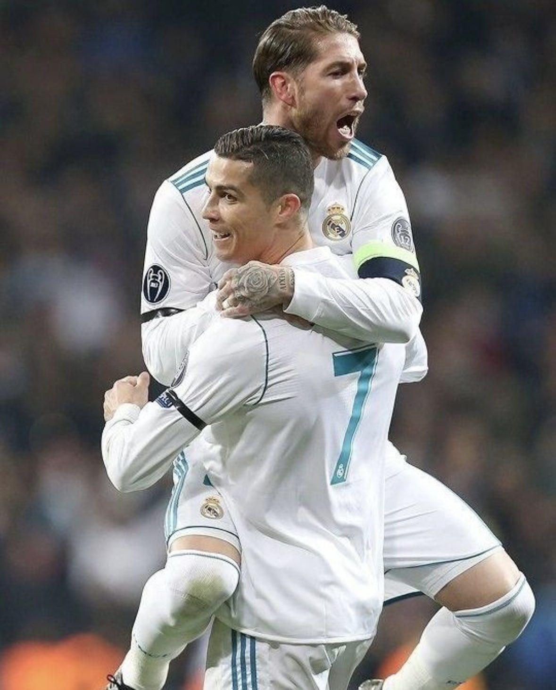
他最强的地方并不只在进球，而是让比赛进入自己熟悉的强度区间。一旦节奏被他掌控，防线会被持续压缩。
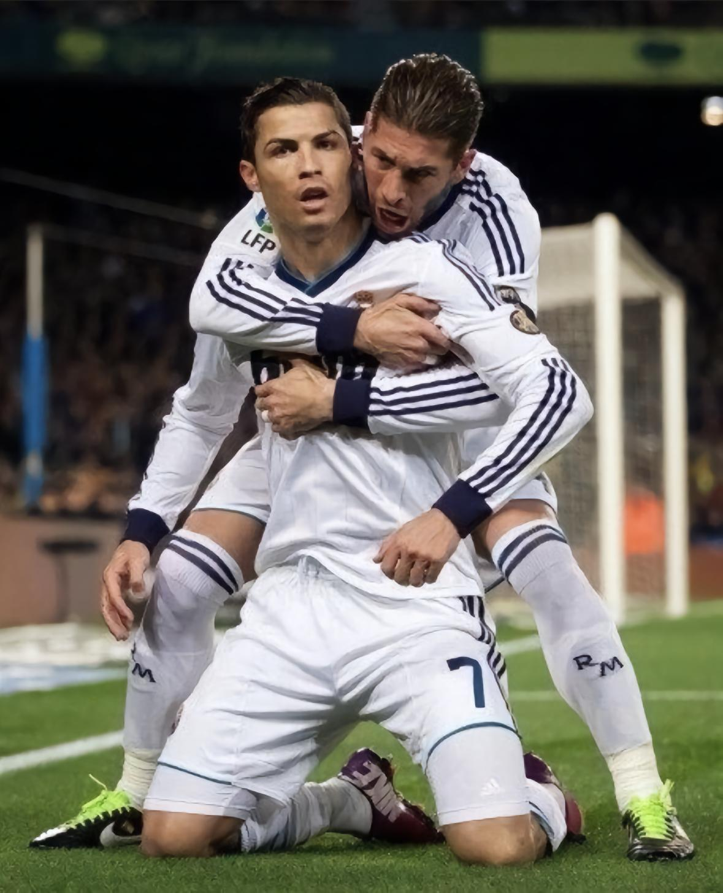
当大多数球员在谈状态波动时，他更像在谈标准。恢复、饮食、训练和身体管理，被执行到了近乎苛刻的程度。
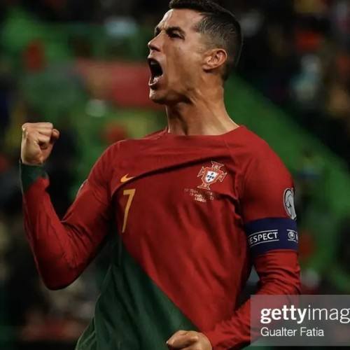
无论是罚球前、冲刺中还是庆祝瞬间，视觉上都能感到一种压迫性的自信，这是他成为全球体育符号的重要部分。
“天赋让你被看见，自律让你一直站在聚光灯里。”
这个页面想表达的，不只是一个巨星的履历，更是一种长期保持世界级标准的职业哲学。